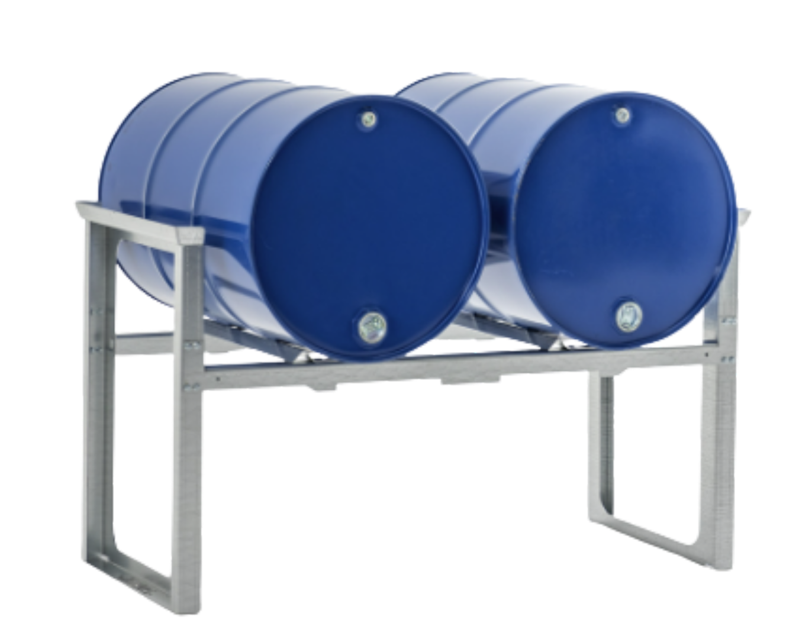

Poste de Sous-Tirage (PS-2F)

| Dimensions Structure | 141 x 68.5 x 92.5 cm [cite: 6] |
| Dimensions Bac | 121 x 90 x 18 cm [cite: 6] |
| Capacité de Rétention | 200 Litres [cite: 6] |
| Charge Maximale | 500 kg [cite: 6] |
| Poids Total | 130 Kg (Str + Bac) [cite: 6] |
| Équipement | 01 Caillebotis + Vidangeur [cite: 6] |
Optimisé pour le transvasement ergonomique de 02 fûts de 200L. Structure boulonnée et démontable. [cite: 6]
Demander DevisPoste de Sous-Tirage (PS-4F)

| Dimensions Structure | 266 x 68.5 x 92.5 cm [cite: 7] |
| Dimensions Bacs | 121 x 90 x 18 cm (x2) [cite: 7] |
| Capacité de Rétention | 2 x 200 Litres [cite: 7] |
| Charge Maximale | 1000 kg [cite: 7] |
| Poids Total | 240 Kg (Str + Bacs) [cite: 7] |
| Équipement | 02 Caillebotis + Vidangeurs [cite: 7] |
Conçu pour la manipulation simultanée de 04 fûts. Idéal pour les zones de haute production. [cite: 7]
Demander Devis